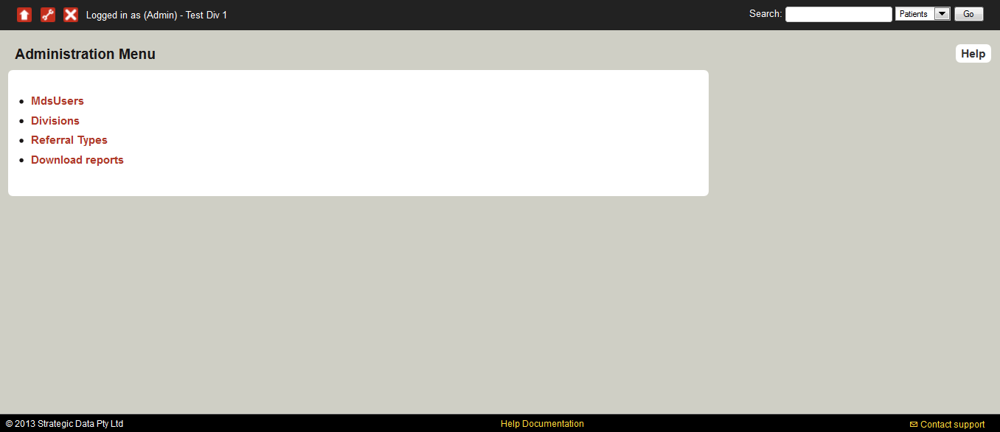

If you are an administrator user, you can make changes to the Admin Settings. (Please note, this level of access to the MDS is assigned to appropriate team members within the University of Melbourne and Strategic Data only.)
You can reach the Admin Settings area by clicking on the settings icon in the top left.

From the Administration Menu you can edit the site of the day, manage the users who have access to the MDS, manage the divisions, referral types, and download reports.